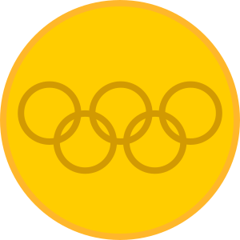
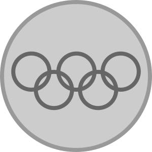
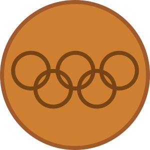
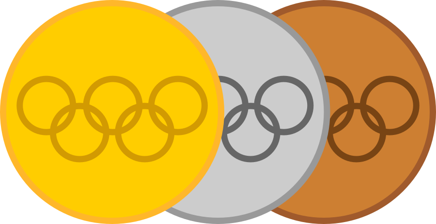

Grandes Competidores do Vôlei
O vôlei tem uma rica história de competidores excepcionais que deixaram sua marca no esporte. Entre eles está Karch Kiraly, um dos maiores jogadores de vôlei de praia e indoor da história. Kiraly conquistou inúmeros títulos e é amplamente reconhecido por sua habilidade e dedicação ao esporte.
| Categoria |  |  |  |  |
|---|---|---|---|---|
| Voleibol (indoon) | 3 | 1 | 0 | 4 |
| Voleibol de praia | 1 | 0 | 0 | 1 |
No vôlei feminino, Misty May-Treanor é uma das atletas mais conhecidas. Juntamente com sua parceira Kerri Walsh Jennings, ela dominou o vôlei de praia durante anos, ganhando três medalhas de ouro olímpicas consecutivas.

| Categoria | ||||
|---|---|---|---|---|
| Voleibol (indoor) | 3 | 0 | 0 | 3 |